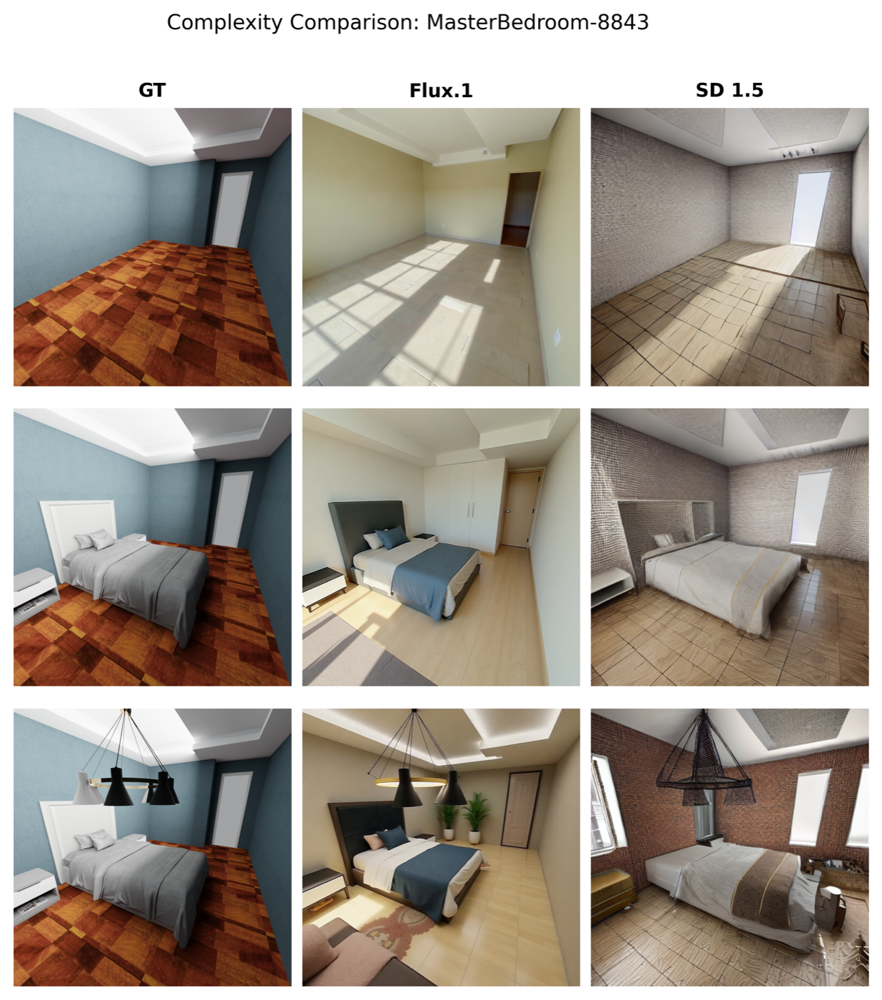
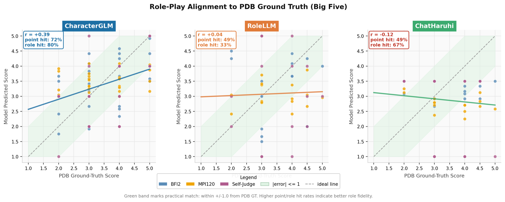

Technical Skills
- Python, PyTorch, NumPy, pandas
- Computer Vision, Deep Learning, Image Generation
- 3D Reconstruction, Geometry-Aware Evaluation
- LLM evaluation, experiment design, reproducible pipelines
IA2 Final Individual Project
Data Science student seeking Data Analyst Intern / Research Assistant opportunities to build practical computer vision and generative AI systems for structural understanding, geometric reasoning, and real-world decision support.
I am a Data Science student with a strong interest in computer vision and generative AI. My work focuses on applying structure-aware approaches to 3D reconstruction and embodied carbon analysis, aiming to bridge digital modeling with sustainability applications.
I have experience working with deep learning frameworks such as PyTorch and building pipelines that integrate image generation, depth estimation, and semantic understanding. In addition, I have explored large language models for personality analysis and evaluation, combining quantitative methods with behavioral modeling.
I am particularly interested in developing AI systems that can understand structure, geometry, and real-world constraints. I am currently seeking opportunities where I can apply my skills in computer vision and generative AI to solve practical problems.
Education: Lingnan University, Master of Advanced Data Science (Research), Expected Graduation: Feb 2027
Each project follows the required IA2 project-card structure.
Problem: Existing image generation metrics (e.g., FID, LPIPS) evaluate perceptual quality but overlook geometric fidelity, such as planar consistency, orthogonality, and edge alignment, which are critical for downstream 3D reconstruction and BIM applications.
Data: Built a benchmark on 3D-FRONT with 3,600 annotated views (RGB, depth, edges, segmentation, camera parameters) and 21,600 generated images across 6 generative models (Stable Diffusion, Flux.1, SDXL, etc.), totaling about 148 GB.
Approach: Proposed four geometry-aware metrics (planar consistency, orthogonality, edge alignment, vanishing point consistency). Designed a relative degradation framework (delta L) to separate generation artifacts from depth-estimation noise, and validated robustness with semantic masking plus 7 ablation studies.
Outcome / Impact: Showed perceptual quality is not equal to geometric fidelity (the best-FID model had the worst geometric performance). Identified Flux.1 as most robust in structural consistency (lowest orthogonality degradation), exposed edge alignment as a common bottleneck, released the open-source benchmark (GitHub + HuggingFace, ~148 GB), and submitted the paper to NeurIPS 2026 (Evaluations & Datasets Track).

Your Contribution: Independently designed and implemented the full pipeline, including dataset construction in Blender, multi-model generation (diffusers/ComfyUI), metric design, large-scale evaluation, ablation studies, and manuscript writing.
Optional Link: Project repository and paper links will be released after manuscript submission.
Problem: Most personality studies examine whether role-playing models behave realistically while assuming evaluators are reliable. This project tests whether LLM evaluators can actively and consistently infer latent personality traits from multi-turn dialogue.
Data: Built a dialogue benchmark grounded in Personality Database (PDB), covering 50+ characters with Big Five/MBTI annotations, multi-turn dialogues across 5 scenarios and 5 LLMs, and structured pair-level transcripts for evaluation.
Approach: Proposed a reverse-evaluation framework in which standardized role-playing Actors with controlled traits interact with LLM Judges that infer personality profiles. Implemented an end-to-end pipeline for dialogue generation, transcript slicing, and cross-scenario evaluation.
Outcome / Impact: Delivered a reproducible evaluation pipeline and benchmark over 249 character-model pairs with ranking matrices. Established the foundation for advanced diagnostics (e.g., RMSE, convergence, robustness) and systematic analysis of evaluator bias and reliability.

Your Contribution: Led problem formulation and methodology design, shifting focus from role-playing realism to evaluator diagnosis. Independently built and executed the Phase 1-2 pipeline, including data processing, dialogue generation, metric computation, and experimental analysis.
Optional Link: Project repository and paper links will be released after manuscript submission.
Downloadable Resume Link: GU_Jialin_Resume_onepage_pretty.pdf
Email (Required): jialingu@ln.hk
GitHub (Optional): github.com/Jialin-GU
Phone (Optional): +852 69421761